ワンドの意味一覧（14枚）
ワンド（棒）は火のエレメントに対応し、情熱・意欲・行動・挑戦を司るスートです。エースからテンまでの数札は、ひらめきが生まれ、計画を立て、競い合い、成果を得て、やがて重荷を抱えるまでの流れを描きます。ペイジ・ナイト・クイーン・キングの人物札は、その熱量をどう扱う人なのかを表します。決断の場面でワンドが出たときは、「本当にやりたいのはどちらか」「勢いと準備のバランスは取れているか」を確かめる視点として読むと役立ちます。気持ちが先走りやすい選択や、新しい挑戦を前にしたときに特に参考になるスートです。同じワンドでも、数が小さいほど始まりの勢いを、大きいほど抱え込んだ責任を表す傾向があります。いま自分の熱意がどの段階にあるのかを照らし合わせながら読んでみてください。
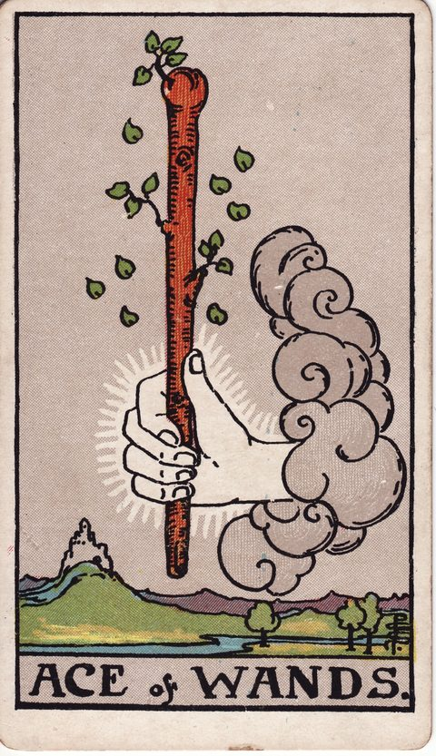
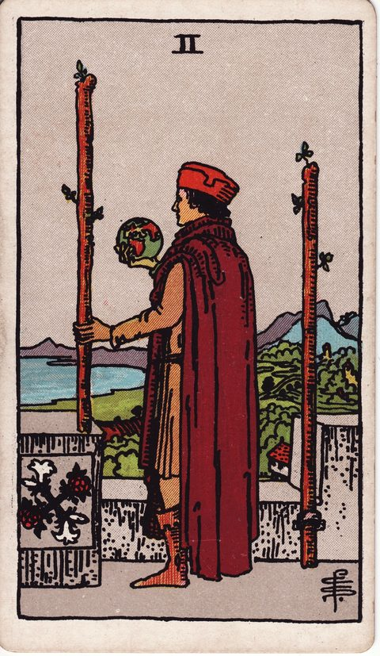
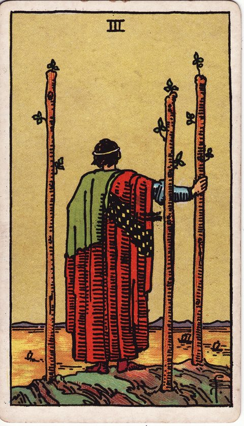
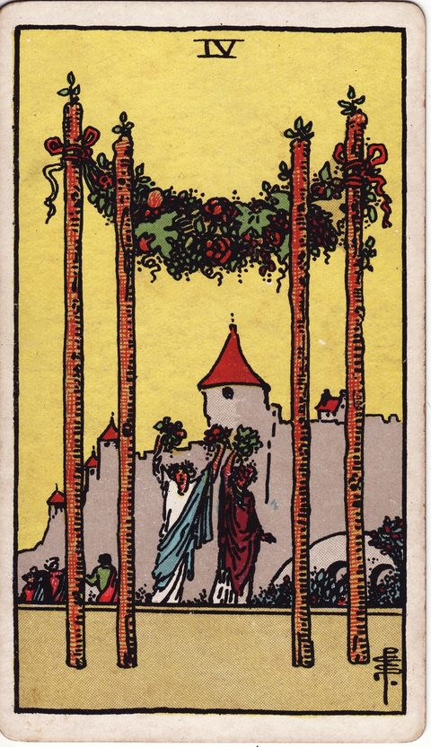
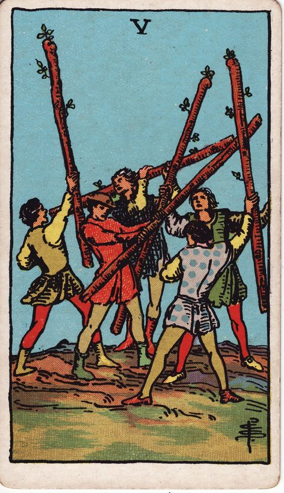
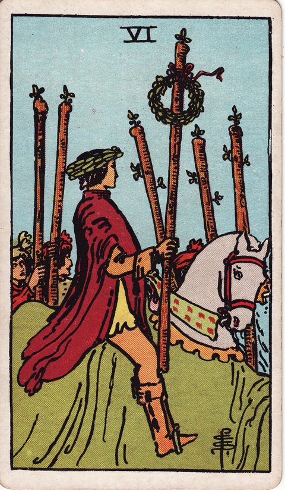
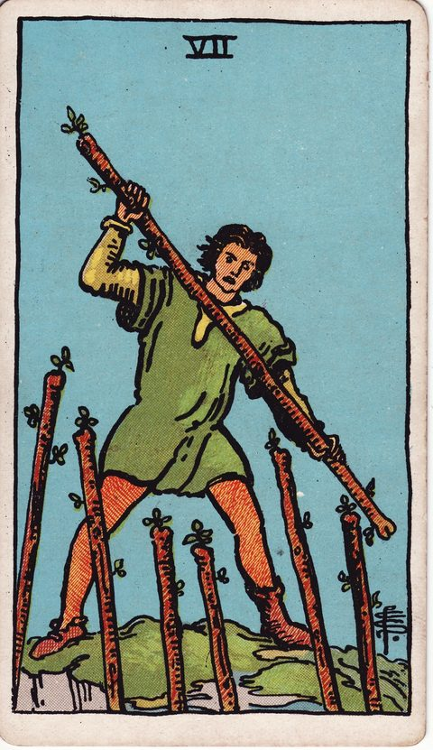
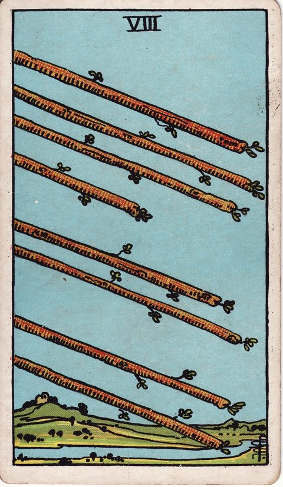
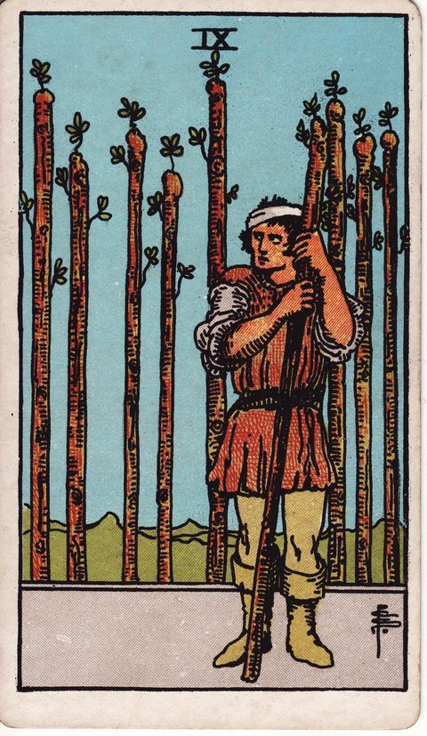
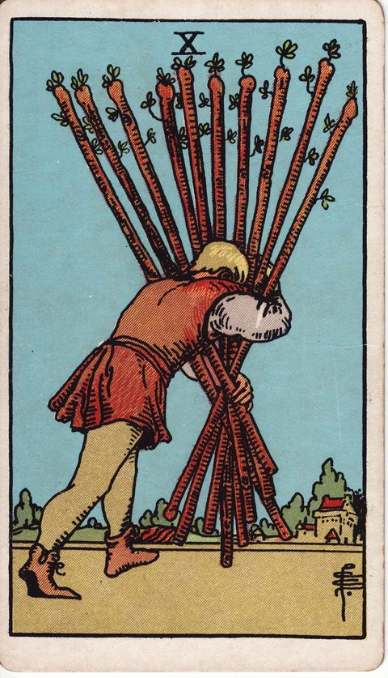
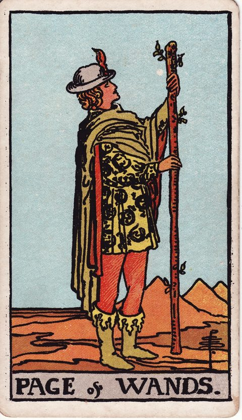
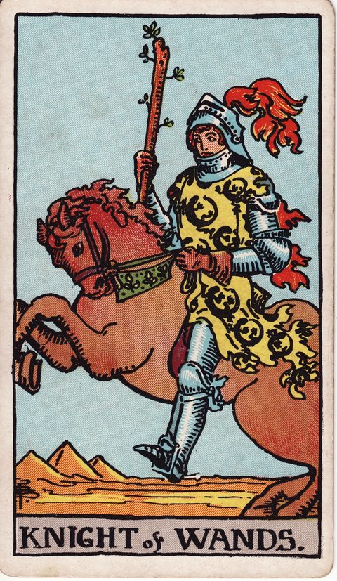
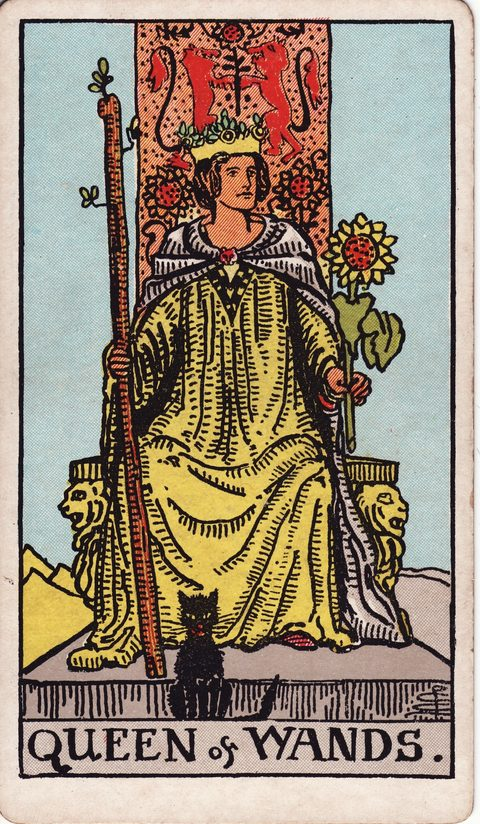


ワンドの視点を、いまの選択肢に当てはめてみる
今抱えている迷いを、このカードの視点から考えてみるワンドのキーワード早見表
- ワンドのエース：正位置「情熱・始動・きっかけ」／逆位置「空回り・出遅れ・意欲の低下」
- ワンドの2：正位置「計画・展望・決断」／逆位置「計画倒れ・視野の狭さ・決められない」
- ワンドの3：正位置「展望・拡大・先を見通す」／逆位置「遅れ・見通し違い・待ちぼうけ」
- ワンドの4：正位置「祝福・安定・節目」／逆位置「落ち着かなさ・祝えない・準備不足」
- ワンドの5：正位置「競争・衝突・意見の対立」／逆位置「争いの終息・回避・くすぶる対立」
- ワンドの6：正位置「勝利・称賛・自信」／逆位置「慢心・評価されない・孤立」
- ワンドの7：正位置「防衛・信念・踏ん張り」／逆位置「疲弊・押される・折れそう」
- ワンドの8：正位置「急展開・スピード・連絡」／逆位置「遅延・すれ違い・勢いの減速」
- ワンドの9：正位置「粘り・警戒・最後の踏ん張り」／逆位置「疲弊・頑固・防御過剰」
- ワンドの10：正位置「重荷・責任・抱え込み」／逆位置「荷を下ろす・分担・限界」
- ワンドのペイジ：正位置「好奇心・新しい知らせ・情熱の芽」／逆位置「気まぐれ・未熟・知らせの遅れ」
- ワンドのナイト：正位置「情熱的な行動・冒険・スピード」／逆位置「衝動・短気・空回り」
- ワンドのクイーン：正位置「自信・魅力・人望」／逆位置「嫉妬・気まぐれ・自己中心」
- ワンドのキング：正位置「ビジョン・リーダーシップ・決断力」／逆位置「独断・傲慢・見境のなさ」